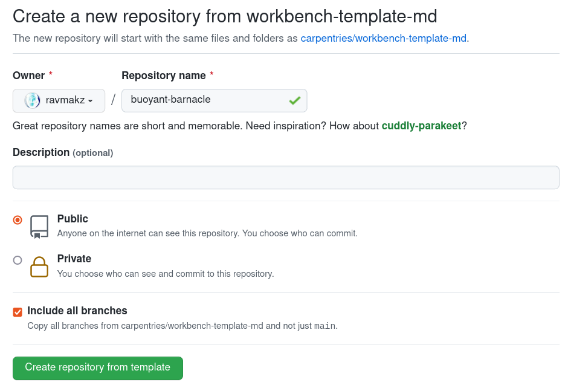
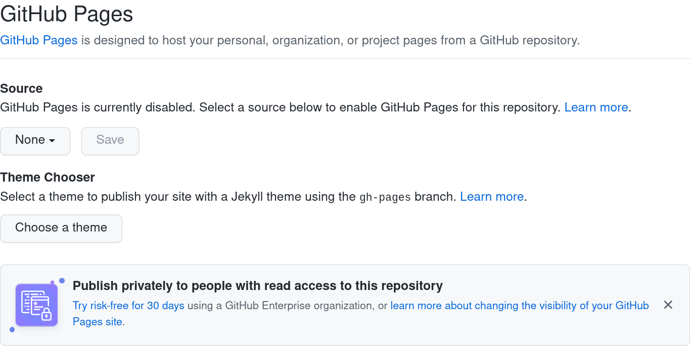
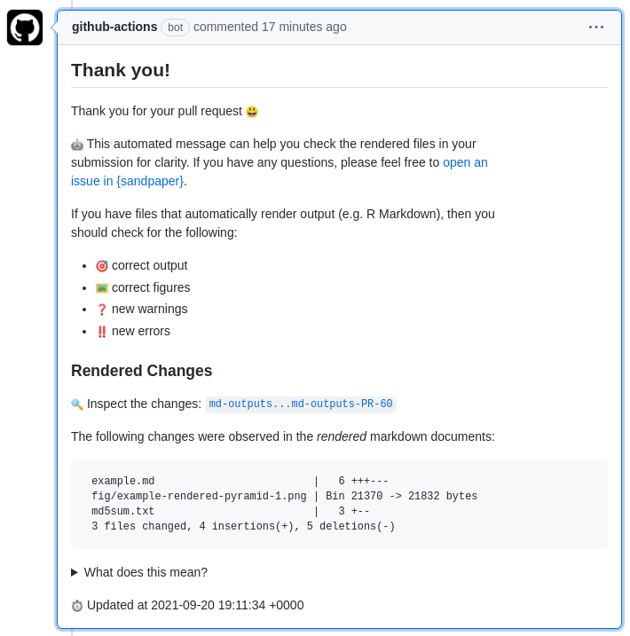
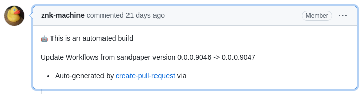
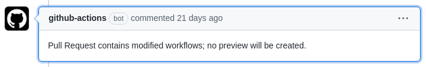
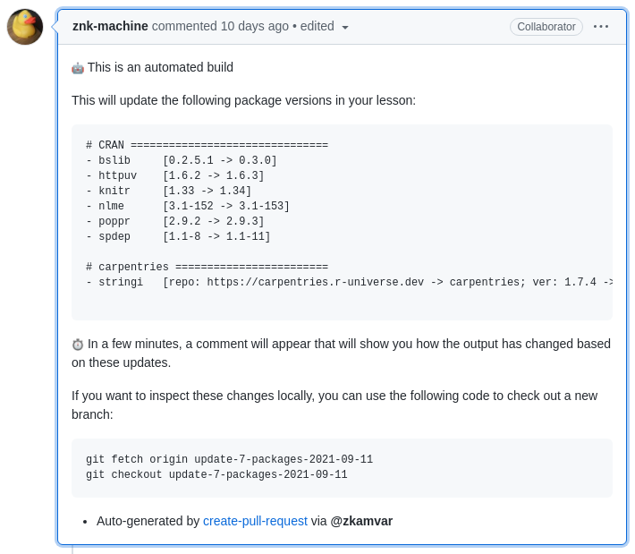
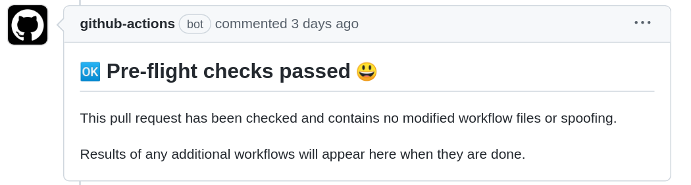
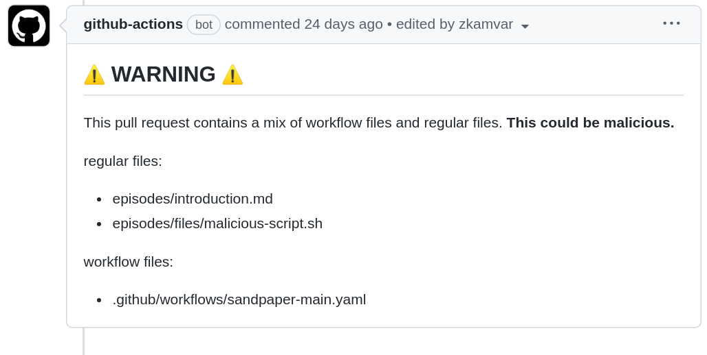

Image 1 of 1: ‘Screenshot of a webform that says 'Create a new repository from workbench-template-md'. It says that the new repository will contain the same files and folders as carpentries/workbench-template-md and has two required fields for Owner and Repository Name, which are filled in as ravmakz and buoyant-barnacle. There is a blank Description option, a radio button that selects public/private, and an checked checkbox to include all branches’

What you should see when you click on one of the
above two links
Figure 2
Image 1 of 1: ‘screencapture of the initial view of the GitHub Pages section of the settings tab’

Figure 3
Image 1 of 1: ‘screencapture of expanded "select branch" button with "gh-pages" selected’
Image 1 of 1: ‘A stylized flowchart with 'good ideas', 'code', and 'data' flowing into '.Rmd', transformed to '.md' via 'knitr', and then transformed to 'html', 'pdf', and 'docx' via 'pandoc'. There is an illustration of a hedgehog knitting a sock to the left and a rabbit wearing the other sock on the right.’
Image 1 of 1: ‘Diagram showing the process of `build_lesson(rebuild = TRUE)`, starting from R Markdown to Markdown and finally to HTML. R Markdown is highlighted as being the only element tracked by git.’
Image 1 of 1: ‘Screen shot of GitHub interface zoomed into a button that says "Run workflow" with two options to specify your name (@zkamvar) and files to clean (.yaml). A green Run Workflow button is at the bottom of the dialogue.’
Image 1 of 1: ‘Screenshot of GitHub bot comment informing you the message is automated, that you should check for accuracy of rendered output, and that there were 3 files changed in the rendered markdown documents.’

Figure 2
Image 1 of 1: ‘Screeshot of a GitHub rich diff showing two versions of a pyramid, one with a blue sky and yellow pyramid and the other with a yellow sky and lavender pyramid.’
Figure 3
Image 1 of 1: ‘Workflow diagram from a pull request starting from Pull Request, and going to a path involving validation, artifact creation, maintainer review, and potential deployment.’
The pull request cycle. Ellipse nodes (Pull
Request and Maintainer Review) are the only places that require
maintainer attention.
Figure 4
Image 1 of 1: ‘Screen shot of the bot commenting that it is an automated build and that it is updating workflows.’

Figure 5
Image 1 of 1: ‘Screen shot of the github-actions bot commenting with the heading 'Modified Workflows' with text 'Pull Request contains modified workflows and no preview will be created.' It lists the workflow files modified and then says in bold text: 'If this is not from a trusted source, please inspect the changes for any malicious content.'’

A Pull Request from @carpentries-bot signalling that workflows
are modified and that they can be merged if you trust the bot
Figure 6
Image 1 of 1: ‘Screen shot of the apprentice bot commenting that package versions have been updated in the lesson (e.g. xfun version changing from 0.33 to 0.34). It indicates that a comment will appear in a few minutes to show what has changed.’

A Pull Request from @carpentries-bot giving details of what
packages were modified and that they can be merged if you trust the
bot
Figure 7
Image 1 of 1: ‘a comment from github actions (bot) that with the heading 'Pre-Flight Checkes Passed' and a smiley face. The text reads 'This pull request has been checked and contains no modified workflow files, spoofing, or invalid commits. Results of any additional workflows will appear here when they are done.'’

A sign that good things will come
Figure 8
Image 1 of 1: ‘a comment from github actions (bot) with the heading 'WARNING' flanked by yellow warning symbols. The text reads 'This pull request contains a mix of workflow files and regular files. This could be malicious.' The list of regular files are episodes/introduction.Rmd and episodes/files/malicious-script.sh. The list of workflow files shows .github/workflows/sandpaper-main.yaml’

A warning that something is not quite
right
Figure 9
Image 1 of 1: ‘a comment from github actions (bot) with the heading 'DANGER' flanked by red 'x' symbols. The text reads in bold letters 'DO NOT MERGE THIS PULL REQUEST' and gives information about the divergent history and the invalid commit. It has extra information for the pull request author to delete their fork and re-fork the repository to contribute changes.’